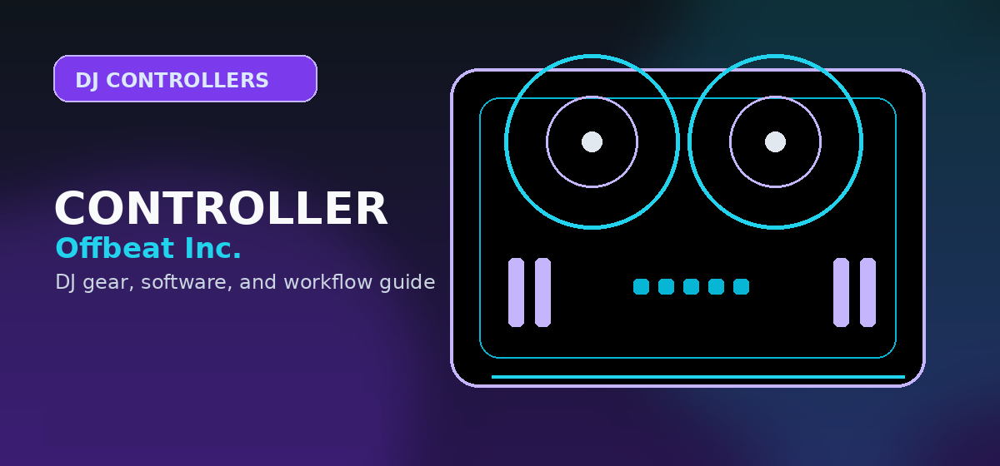

Best DJ Controllers 2026: Ranked Picks
Best DJ controllers 2026: Pioneer DDJ-FLX4, Numark Party Mix II, Denon MC7000, and other picks. Compared by software fit, I/O, workflow, and current value for every budget level.

Disclosure: This page uses affiliate links. We may earn a commission at no extra cost to you. Full disclosure →
We compared the six controllers below using official manufacturer and software-provider pages, published model specifications, and current price/model/license checks. This is an editorial source review — a desk-based comparison, not hands-on testing — so we do not publish measured latency figures, bench rankings, or best-price guarantees. Where a price, stock level, or license tier matters, confirm the current official listing for your region before buying.
Controller Comparison Table
| Controller | Price | Channels | Jog Size | Best For |
|---|---|---|---|---|
| Pioneer DDJ-FLX4 Top Pick | Verify current price | 2 | 5-inch (127mm) capacitive | Beginners → intermediates |
| Numark Party Mix II | Verify current price | 2 | Touch-sensitive | Budget / bedroom |
| Pioneer DDJ-800 | Verify current price | 2 | 150mm | Club-prep, rekordbox users |
| Denon MC7000 | Verify current price | 4 | See official spec | Multi-deck mixing |
| Roland DJ-707M | Verify current price | 4 | See official spec | Pro touring |
| Hercules DJControl Inpulse 500 | $299.99 at US-store check time | 2 | 140mm | Beatmatch-guide beginners |
Pioneer DDJ-FLX4 — Best Overall
The FLX4 is a 2-channel, 16-pad controller with 5-inch capacitive jog platters (127mm), Smart Fader and Smart Color FX, and USB-C bus power. It unlocks Serato DJ Lite out of the box, with Serato DJ Pro available as a paid upgrade, and the same hardware also works with rekordbox. We publish no measured latency figure for it; for the latency-versus-CPU tradeoff of USB buffer sizes, see the Serato audio support guidance, and verify the current price and model before buying. Source: Serato — Pioneer DDJ-FLX4.
- ✅ Dual software support — rekordbox and Serato DJ Lite on the same hardware; Serato DJ Pro is a paid upgrade
- ✅ 5-inch (127mm) capacitive jog platters — practical for cueing and scratch practice
- ✅ Beat FX section + Performance Pads (8 per deck)
- ✅ USB-C connection, bus-powered — no power brick required
- ❌ 2-channel only — no 4-deck hardware mixing
- ❌ No standalone mode — laptop required for every set
→ Full Pioneer DDJ-FLX4 review | DDJ-400 vs FLX4 comparison | Search Pioneer DDJ-FLX4 controller on Amazon →
Numark Party Mix II — Best Budget Entry
The Party Mix II is one of the lowest-barrier entries in DJ hardware (verify the current official price for your region). It has a 2-band EQ per deck, touch-sensitive jog wheels suited to scratching, and a built-in light show of three beat-synchronized multicolored LEDs. It works with Serato DJ Lite, with compatible mobile-app options detailed on the official Numark product page.
- ✅ 2-band EQ per deck — confirm the exact layout on the official page
- ✅ Touch-sensitive jog wheels — usable for scratching practice
- ✅ Three beat-synchronized multicolored LEDs for party lighting
- ✅ Serato DJ Lite support plus compatible mobile-app options
- ❌ Fewer performance pads than mid-range options — check whether the workflow fits your style
→ Best DJ controllers under $200 | Search Numark Party Mix II on Amazon →
Pioneer DDJ-800 — Best Club-Prep Controller
The DDJ-800 mirrors the Pioneer CDJ-NXS2 layout — 150mm jogs, the same effects structure, and the rekordbox track export workflow used in real clubs. This is the controller that closes the gap between bedroom practice and playing on club gear. It's rekordbox-only (no Serato support). Verify the current list price and stock before comparing it against the FLX4 or FLX6.
- ✅ 150mm jogs — nearest to club CDJ feel in controller form
- ✅ Beat FX and Sound Color FX identical to club Pioneer setups
- ✅ 4-channel performance pads + slip mode
- ❌ rekordbox-only — no Serato compatibility
- ❌ Priced a step above entry and mid-range options — verify current value
→ FLX4 vs FLX6: which Pioneer is right for you? | Search Pioneer DDJ-800 on Amazon →
Denon MC7000 — Best 4-Channel Serato Controller
The MC7000 is a four-channel Serato DJ Pro controller with dual USB audio interfaces for handoffs between two computers and a free Pro hardware unlock, with listed expansion packs. It is not a USB-drive standalone player, so plan the software side of your rig as well. Compare current pricing against Pioneer's four-channel DDJ-FLX10 before deciding. Source: Serato — Denon DJ MC7000.
- ✅ Four channels with Serato DJ Pro — free Pro hardware unlock included
- ✅ Dual USB audio interfaces — handoffs between two computers
- ✅ Listed expansion packs for added functionality
- ❌ Not USB-drive standalone playback — mixing runs through Serato DJ Pro
- ❌ Heavier and larger than entry models — check weight and logistics on the official spec page
Roland DJ-707M — Best for Roland Integration
The Roland DJ-707M targets professional mobile DJs who perform with Roland hardware in a Serato-integrated rig. Its distinguishing feature is onboard TR rhythms for syncing patterns with your Roland kit, plus master, booth, and zone outputs with independent speaker-management DSP and dual USB for handoffs between two computers. Verify the current price and supported rhythm hardware on the official Roland product page.
Confirm today’s price, stock, and return policy before buying.
- ✅ Onboard TR rhythms — sync patterns with your Roland kit
- ✅ Master, booth, and zone outputs with independent speaker-management DSP
- ✅ Dual USB for handoffs between two computers
- ❌ Niche buyer profile — best if you already own Roland hardware
- ❌ Roland DJ software ecosystem is smaller than Pioneer/Serato
Hercules DJControl Inpulse 500 — Best Beatmatch-Guide Beginner
The Hercules Inpulse 500 is a two-channel USB controller with a built-in Beatmatch Guide — LEDs show when the tracks are in beat, guiding tempo nudge and blend decisions while you learn. It ships with Serato DJ Lite and DJUCED licenses, includes a 2-year warranty, and has 140mm jog wheels. Hercules' official US store listed $299.99 on October 12, 2026. That is not an under-$200 entry; check current local pricing and availability. Source: Hercules official product page.
- ✅ Beatmatch Guide LED system — guides mixing fundamentals as you practice
- ✅ 140mm jog wheels — larger than many budget controllers
- ✅ Dual software licenses (Serato DJ Lite + DJUCED)
- ✅ Manufacturer-stated two-year warranty — confirm current regional coverage
- ❌ Not a sub-$200 pick at the US-store price checked October 12, 2026 ($299.99); availability and discounts vary
- ❌ Limited upgrade path vs. Pioneer or Denon ecosystem
→ Compare DJ controllers under $300 | Search Hercules DJControl Inpulse 500 on Amazon →
Our Final Recommendation
Best overall: Pioneer DDJ-FLX4 gives the safest all-round path for beginners and intermediate DJs. Best 4-deck: Pioneer DDJ-FLX10 fits working DJs who need a club-style controller workflow. Best budget: compare the entry-level picks in controllers under $300 before settling for the cheapest option; if you want laptop-free playback, compare standalone DJ systems before buying.
Controller decision tree
Start with software, then budget, then performance style. Buying only by brand or number of pads creates mismatched setups.
Buying advice and compatibility checks
Use this section to sanity-check the DJ controller against your actual setup before comparing prices.
Best fit
DJs comparing one broad shortlist across beginner, mobile, scratch, and four-channel controller paths.
Skip if
Anyone who already needs a laptop-free standalone unit, separate CDJ-style media players, or a dedicated analog mixer.
Compatibility checks
Confirm the exact software unlock: rekordbox, Serato DJ Lite, Serato DJ Pro, djay, and VirtualDJ support do not mean the same feature set.
2026 update
USB-C, stem controls, and clearer software-bundle differences matter more in 2026 than cosmetic pad lighting.
Price caveat
Compare controller price together with required software upgrades, cases, cables, and any subscription needed for the intended workflow.
Recommendation logic
Prioritize software ecosystem, headphone cueing, outputs, jog feel, and upgrade path before extra pads or lighting.
| Buying check | What to verify | Why it matters |
|---|---|---|
| Setup fit | Inputs, outputs, operating system, software tier, and accessories | Prevents buying gear that looks right but fails in the actual rig. |
| Upgrade path | Whether the product still makes sense after six to twelve months | Reduces duplicate purchases and rushed upgrades. |
| Total cost | Required cables, cases, subscriptions, replacement parts, and backups | The lowest listing price is often not the true working setup cost. |
Official spec and support links
Check current specs, supported software, firmware, and accessory requirements at the source before buying.
- Pioneer DJ DDJ-FLX4 official product page
- Serato DJ — Pioneer DDJ-FLX4 (Serato DJ Lite unlock; Pro is a paid upgrade)
- Serato audio support — USB buffer size, latency, and CPU tradeoffs
- Pioneer DJ DDJ-FLX10 official product page
- Numark Party Mix II official product page
- Hercules DJControl Inpulse 500 official product page
- Serato DJ — Denon DJ MC7000 (four-channel Serato DJ Pro, dual USB, free Pro unlock)
- Roland DJ-707M official product page
Frequently Asked Questions
What DJ controller is best for beginners in 2026?
The Pioneer DDJ-FLX4 is our top pick for beginners. It runs both rekordbox and Serato DJ Lite (with Serato DJ Pro as a paid upgrade) and has 5-inch (127mm) capacitive jog platters. We do not publish measured latency figures for it in this guide.
Do I need a laptop to use a DJ controller?
Most controllers require a laptop running DJ software (Serato, rekordbox, or Traktor). The Denon MC7000 is a four-channel Serato DJ Pro controller with dual USB audio interfaces for two computers and a free Pro hardware unlock — but it is not a USB-drive standalone player.
How does the Hercules Inpulse 500 compare with cheaper beginner controllers?
The Hercules Inpulse 500 adds Beatmatch Guide lights, 140mm jog wheels, and DJUCED and Serato DJ Lite support. Hercules' US store listed it at $299.99 on October 12, 2026, so it is not a sub-$200 choice at that price. Compare less expensive options such as the Numark Party Mix II and verify actual retailer prices before buying.
Pioneer DDJ-FLX4 vs DDJ-400 — which is better?
The DDJ-FLX4 is the newer successor to the DDJ-400. It offers a Beat FX section and dual-software compatibility (rekordbox plus Serato DJ Lite, with Serato DJ Pro as a paid upgrade). Check current pricing for both models before comparing value.
How important is jog platter size when choosing a controller?
Jog platter diameter and surface affect scratching feel. The DDJ-FLX4 has 5-inch (127mm) capacitive jogs and the Inpulse 500 has 140mm wheels; if scratching matters, look for larger platters with a surface you are comfortable using and confirm the exact spec on the official pages.